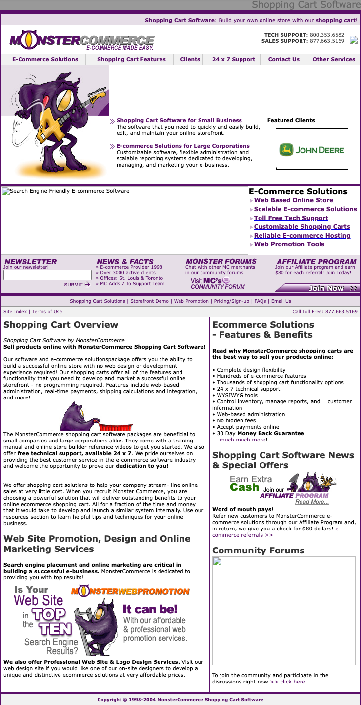
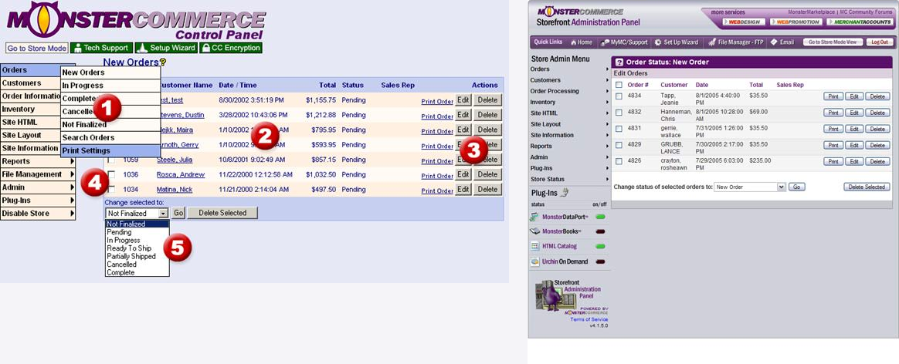
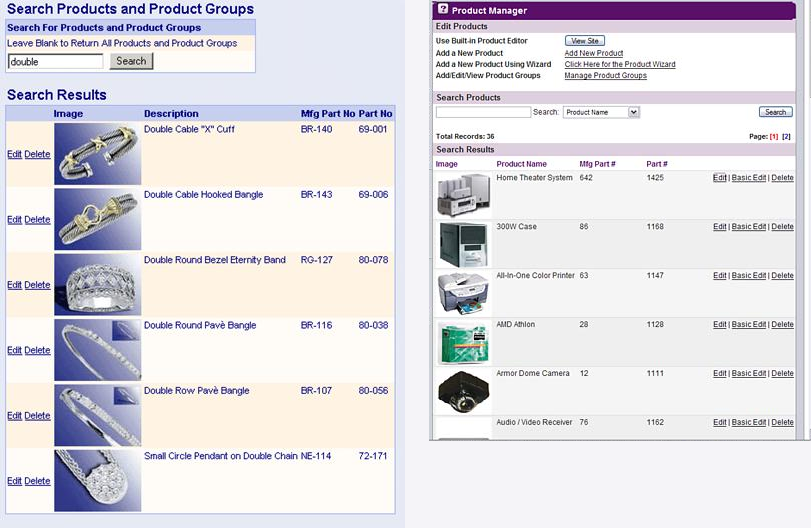
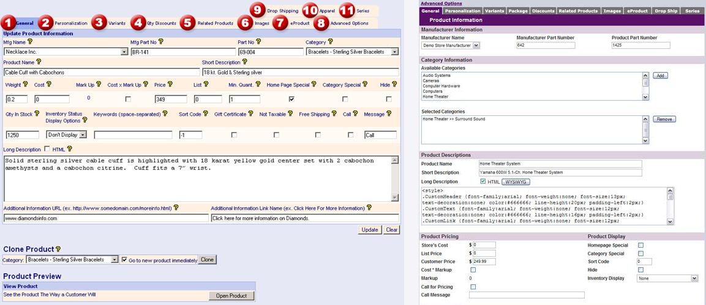
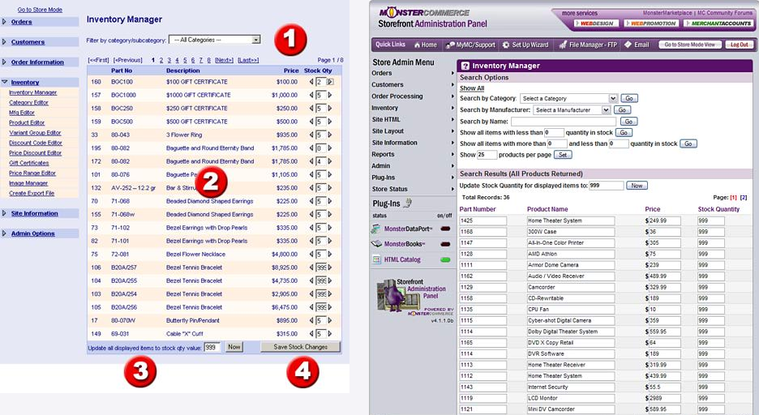
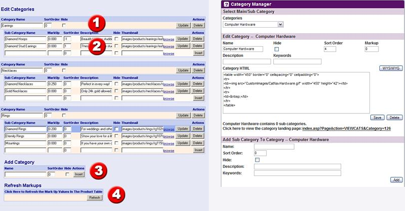
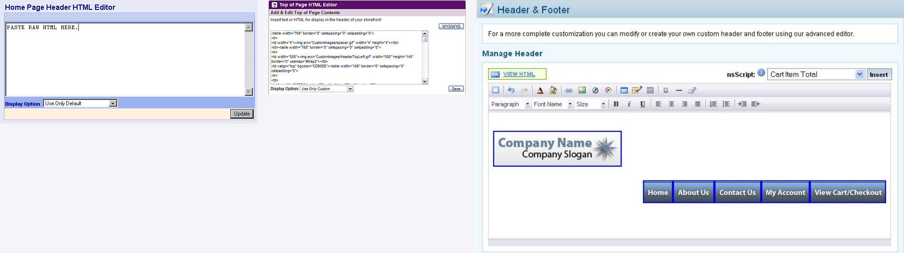
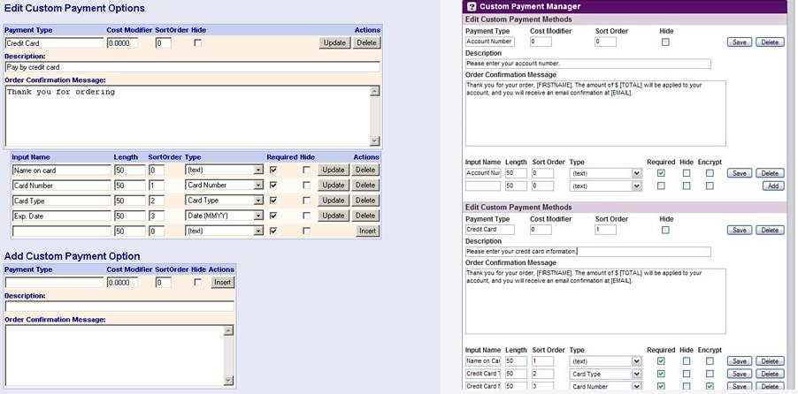
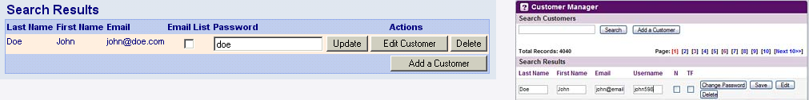

Homepages


Application functionality — 3.x to 4.x
Each row compares the same task. A Network Solutions column is included only where a corresponding screen was recovered. Click a comparison to open the full PNG.
Orders list


Individual screens & source notes
Different sample orders; 3.x includes an open order-navigation menu and original numbered callouts. Both crops preserve the application shell while excluding browser chrome.
Find and manage products


Individual screens & source notes
MonsterCommerce 3.x individuallyMonsterCommerce 4.x individuallyMonsterCommerce 4.x — application context
3.x uses a filtered jewelry search, 4.x an unfiltered electronics list. The data differs but this is the same product-management function. 4.x crop omits navigation/browser chrome to correspond to the original 3.x panel figure.
Edit a product


Individual screens & source notes
MonsterCommerce 3.x individuallyMonsterCommerce 4.x individuallyMonsterCommerce 4.x — application context
3.x shows a jewelry product; 4.x shows a home-theater system. The latter has a dedicated category assignment area. 4.x original ends at a vertical viewport cutoff, and is not a full page.
Manage inventory quantities


Individual screens & source notes
3.x has original training callouts; 4.x adds more filtering controls. Both crops preserve the application context without period browser chrome.
Edit product categories


Individual screens & source notes
MonsterCommerce 3.x individuallyMonsterCommerce 4.x individuallyMonsterCommerce 4.x — application context
3.x shows several categories together; 4.x shows a selected category and its children. This is a real interface-organization change, not the same selected state.
Edit the storefront header HTML



Individual screens & source notes
MonsterCommerce 3.x individuallyMonsterCommerce 4.x individuallyNetwork Solutions individuallyMonsterCommerce 4.x — application contextNetwork Solutions — application context
3.x label: Home Page Header HTML Editor; 4.x label: Top of Page HTML Editor. The 3.x example is blank placeholder HTML; 4.x has saved markup and a WYSIWYG option.
Configure custom payment methods


Individual screens & source notes
MonsterCommerce 3.x individuallyMonsterCommerce 4.x individuallyMonsterCommerce 4.x — application context
3.x shows one Credit Card method plus an add form; 4.x shows Account Number and Credit Card methods. Field layout and configuration differ; these are the same feature.
Manage customer records


Individual screens & source notes
MonsterCommerce 3.x individuallyMonsterCommerce 4.x individuallyMonsterCommerce 4.x — application context
The recovered 3.x figure is only a single-result strip, so the 4.x crop contains its search controls and first result. Avoid presenting this as a complete 3.x Customer Manager page. Lower-priority comparison because of the small source.